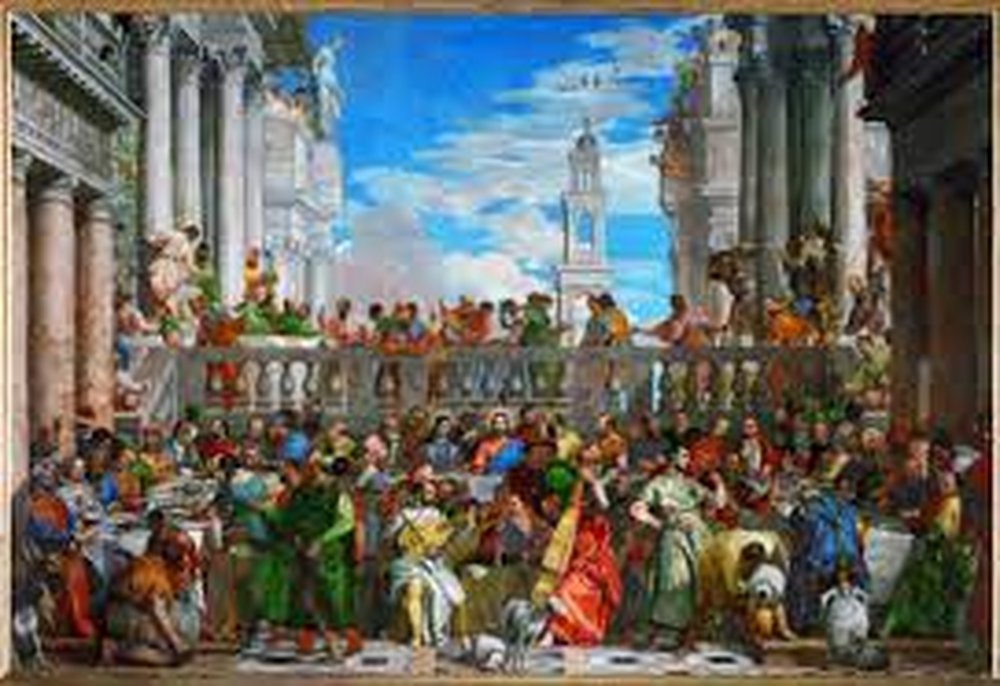

Il dipinto mostra l'episodio della tramutazione dell'acqua in vino durante un matrimonio a Cana, contenuto nel Vangelo secondo Giovanni;
la scena è ricca di particolari e mostra nella sua ambientazione una commistione di dettagli antichi e contemporanei.
L'architettura è sicuramente classica, caratterizzata da due vasti colonnati ai lati del dipinto; al centro si apre invece un cortile
sormontato da una zona rialzata, circondata da una balaustra. Lo sfondo mostra un cielo azzurro macchiato da alcune nuvole bianche, nel quale
si staglia una torre anch'essa in stile classico.
